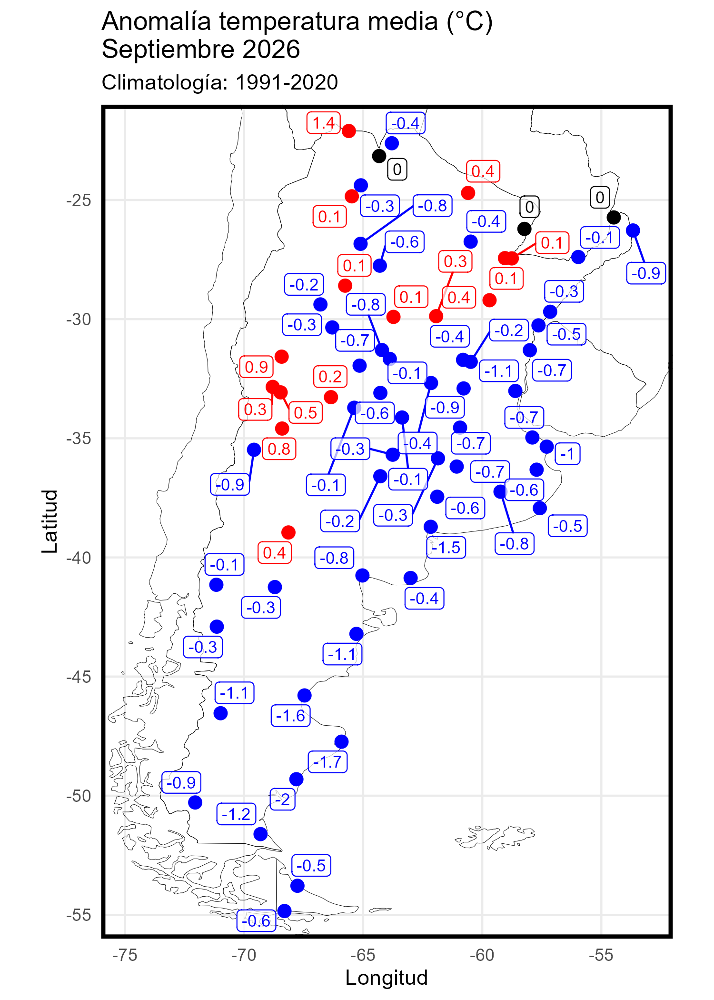

Seguimiento de Temperaturas en Argentina
Portal de datos, mapas y registros históricos
Inicio
Reportes
Anomalías
Records
Mapas interactivos
Base de datos

Mapas de anomalías
📁 Archivo de mapas de anomalías
Anomalías ponderadas al norte de los 40°S
Temperatura mínima
Temperatura máxima
Metodología